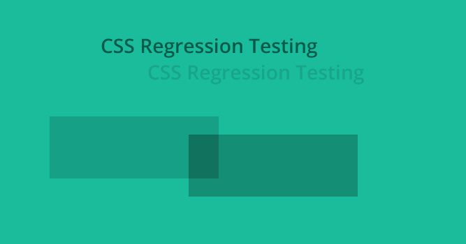

Инфраструктура front-end
Андрей Морозов
Школа разработки интерфейсов, сентябрь 2015
Что такое инфраструктура?


На заре web
- Командная строка.
- ...
- Графический редактор.
- Файловые менеджеры.

Сегодня
- Системы ведения задач.
- Умные IDE.
- Системы контроля версий.
- Инструменты сборки.
- Статические анализаторы кода.
- Системы code review.
- Инструменты тестирования.
- Системы CI.
- ...

Системы ведения задач

Система ведения задач является одним из ключевых элементов современной разработки.
Системы ведения задач позволяет структурировать и опубликовать информацию о задаче, а также четко спланировать работу над ней.
Системы ведения задач

Системы ведения задач
Лекции:
Интегрированная среда разработки

Cистема программных средств, используемая программистами для разработки программного обеспечения.
Интегрированная среда разработки
Частный случай IDE — среды визуальной разработки, которые включают в себя возможность визуального редактирования интерфейса программы (визуальное программирование).
Для web:

Интегрированная среда разработки
Лекции:
Системы контроля версий
Лекции:
Работа над проектом

когда ваш код помещается в пару сотен строчек
Работа над проектом

но так бывает не всегда
Работа над проектом

РАЗДЕЛЯЙ
ВЛАСТВУЙ
Инструменты сборки
Webpack is a module bundler.
webpack takes modules with dependencies and generates static assets representing those modules.

Codestyle
- Консистентный код легко читать.
- Простой код легко поддерживать.
- В очевидном коде труднее допустить ошибку.

Статические анализаторы кода (Linters)
Лекции:
Перехватчики событий (Hooks)
Инструмент позволяющий подписаться на какое-то событие:
-
Git Hooks - события связанные с git (создание commit, добавление commit message, получение удаленной версии репозитория, etc)
-
Web Hooks
Перехватчики событий (Hooks)
node module to manage Git hooks for multiple git repositories
Сode review
-
Улучшается качество кода.
-
Находятся «глупые» ошибки (опечатки) в реализации.
-
Повышается степень совместного владения кодом.

Системы code review
Лекции:
Тестирование
-
Unit
-
Интеграционное
-
Системное
-
Регресионное

Unit-тестирование
-
Еще один вариант документации
-
Позволяет избегать глупых ошибок
-
Обеспечаивает надежность кода (гарантирует, что код работает)
Инструменты unit-тестирования
- Mocha (тестовый фреймворк)
- Chai (assertion library)
- Sinon.JS (библиотека для создания mock'ов, stub'ов, spy'ев)
- Karma runner
- ...
Регресионное тестирования
Чтобы проверить, что не сломалось ничего из того, что не должно было сломаться.

Инструменты регресионного тестирования css
Инструменты тестирования css: csste.st.

Инструменты тестирования
to be continued...
Непрерывная интеграция
Непрерывная интеграция (CI) — это практика разработки программного обеспечения, которая заключается в выполнении частых автоматизированных сборок проекта для скорейшего выявления и решения интеграционных проблем.
Системы CI


Whatever else
-
Профилирование кода.
-
Измерение производительности.
-
Отладка под разные устройства (Browserstack).
-
Генерация документации.
-
Любые самописные, которые делают мир лучше...